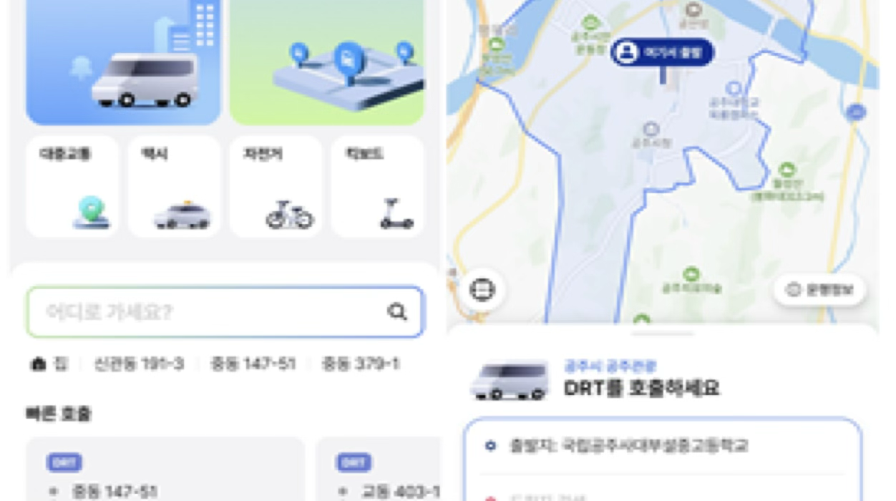
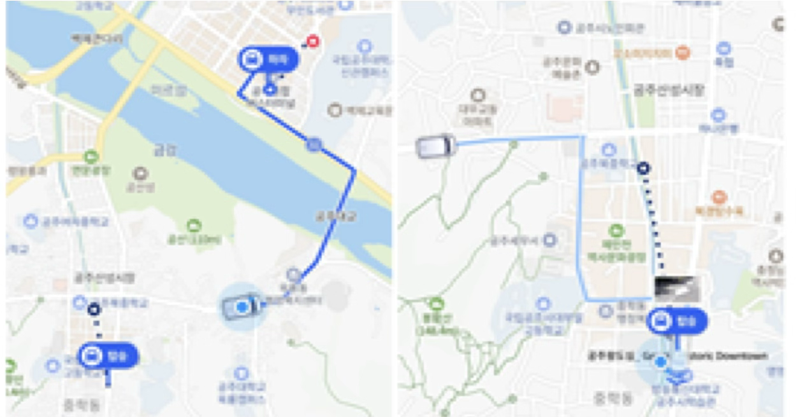
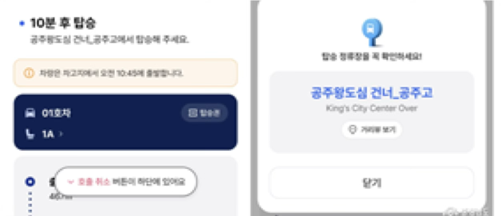

On-go to the Future
1박2일 DRT 여행
백제의 숨결이 살아있는 공주 역사 탐방과 감성 골목부터 스마트 미래 도시 세종의 옥상정원까지 수요응답형 교통(DRT)으로 끊김없이 잇는 여정
DAY 1: 백제의 역사와 감성 골목
전통 문화 유산과 좁은 골목의 로컬 정취 탐방
공주역 출발 → 무령왕릉과 왕릉원
KTX 공주역에서 미팅 후 DRT를 호출하여 유네스코 세계문화유산 무령왕릉과 왕릉원 권역으로 빠르게 이동합니다.
고분군 전경
황새바위 성지
조선 시대 천주교 신자들이 처형당한 순교 유적지에서 역사 해설투어를 진행합니다.
공산성 성곽길 → 제민천 & 잠자리가 놀다간 골목
공산성 성곽을 산책하며 금강 전경을 감상한 뒤, 제민천 하천변을 따라 자리 잡은 감성 가득한 한옥 카페 골목을 탐방합니다.
산성시장 → 공주한옥마을
로컬 산성시장에서 알밤닭강정 등 석식을 즐긴 후 전통 온돌 구들을 갖춘 고즈넉한 공주한옥마을에서 첫날을 마무리합니다.
DAY 2: 미래 도시 세종과 힐링 로드
스마트 아키텍처와 국내 최대 규모의 도심형 인공 호수공원의 조화
정부세종청사 옥상정원 & 대통령기록관
세종으로 이동하여 세계 최대 규모의 정부세종청사 옥상정원을 산책한 뒤, 모던한 건축미의 대통령기록관을 관람합니다.
정부세종청사 옥상정원
기네스북 등재 "세계 최대규모의 옥상정원"
스마트 랜드마크
세종호수공원 & 카페45
세종사랑맛집에서 점심 식사 후 도심 속 거대 녹지인 세종호수공원을 거닐고, 45층 초고층 타워 카페에서 세종시 전경을 한눈에 담습니다.
이응다리 산책 → 오송역 복귀
한글 "ㅇ(이응)"을 모티브로 한 세종의 랜드마크인 원형 금강보행교 이응다리의 스카이워크를 즐긴 뒤, 상시 대기 중인 광역 DRT 차량에 탑승하여 KTX 오송역으로 이동, 투어를 마칩니다.
트래블 지도
공주 역사 지구와 세종 미래 도심을 하나의 DRT 플랫폼 스케줄로 묶어낸 실시간 대중교통 노선망입니다.
DRT 이용 안내
이동 시 수요응답형 DRT 플랫폼을 이용하여 주요 거점을 이동합니다. 본 상품 이용시에는 가이드가 차량을 호출하지만, 기본 DRT 이용에 대해 안내합니다.
제공되는 QR 코드를 통해 연동된 모바일 앱 상에서 출발 및 도착 핀을 확인합니다.

호출 출발 위치에서 탑승 대기시간 확인 후 탑승 대기합니다. (평균 대기 10분 내외)

이동 경로 및 소요 시간 확인 가능하며, 목적지 도착하여 하차합니다. 미리 등록된 결제수단으로 자동 결제됩니다.

- DRT는 매주 월, 화 휴무입니다.
- 정부세종청사 옥상정원은 사전 예약제로 원하는 날짜에 예약이 불가할 수 있습니다. (7~8월 미운영)
여행 상품 안내
역사와 미래가 공존하는 충청권 핵심 연계 1박 2일 투어 패키지의 상세 정보 및 예약 전용 링크입니다.
310,000원
/ 10명 출발 기준| 포함사항 |
|
|---|---|
| 유의사항 |
|